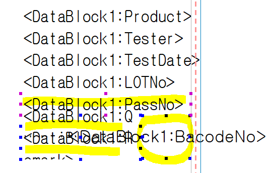
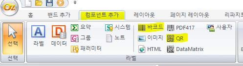
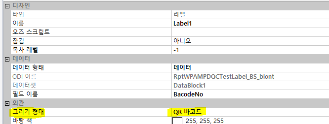
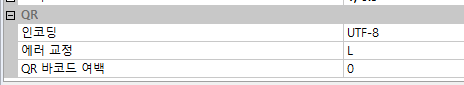

바코드 / QR

기존칸에 데이터가 겹칠 수 있으므로 칸을 줄임

컴포넌트 추가 -> 바코드 / QR

속성 - 외관 - 그리기 형태 => 바코드 / QR 바코드 로 변경
- 바코드로 할 경우 주의사항
- 맨 아래 QR => 인코딩에서
code39 or code 128 or code128(auto)
=> 어떤 바코드 쓸지 여쭤 봐야함

- qr => 위에 과정 생략 (그리기 형태만)
바코드 값 없는 경우 안나오게 설정
if ( This.GetDataSetValue("DataBlock1.BarCode") == "0") {
This.SetVisible(false);
This.SetPrintable(false);
}